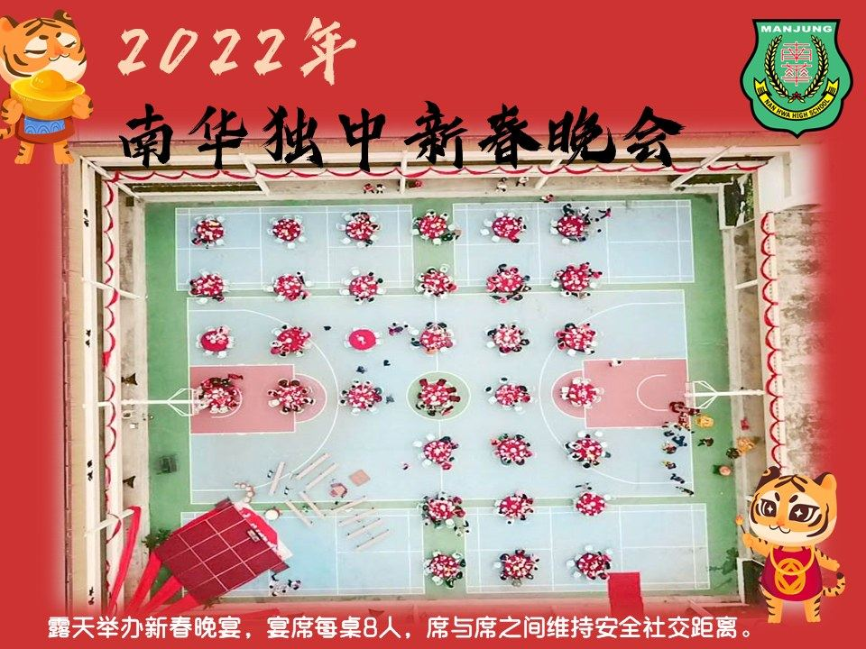
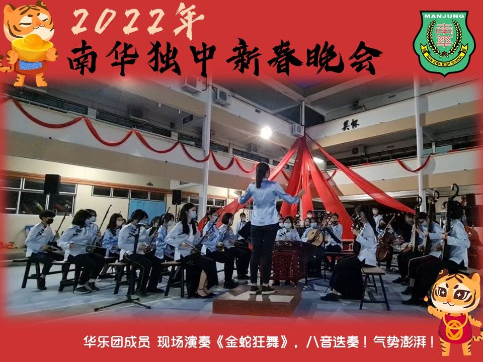
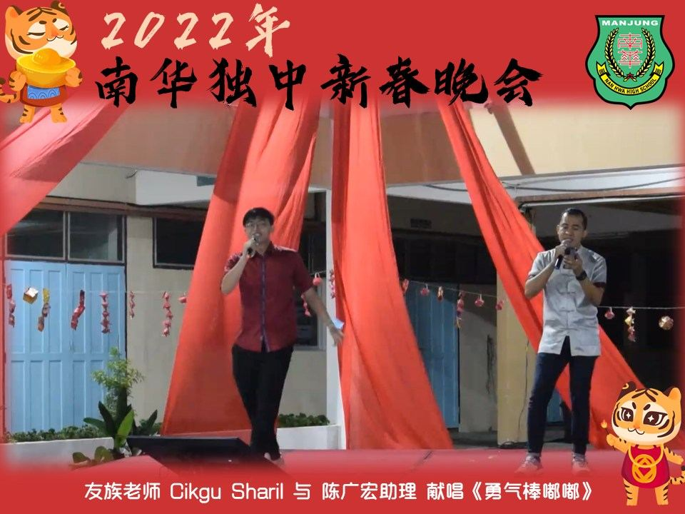
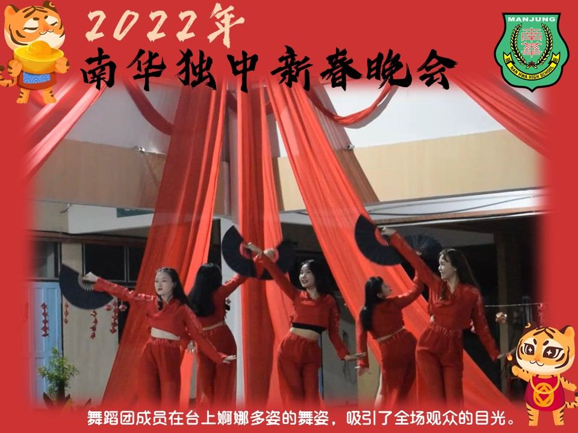
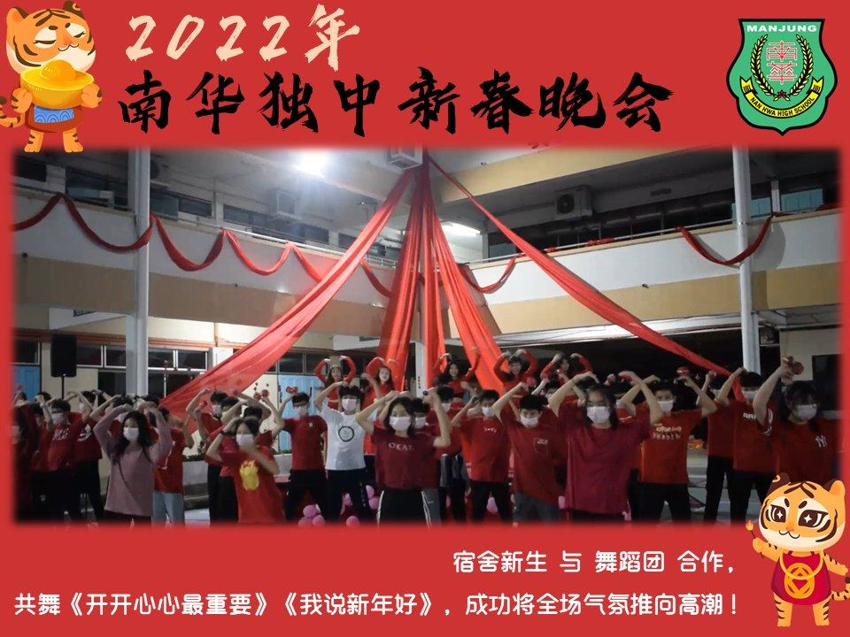
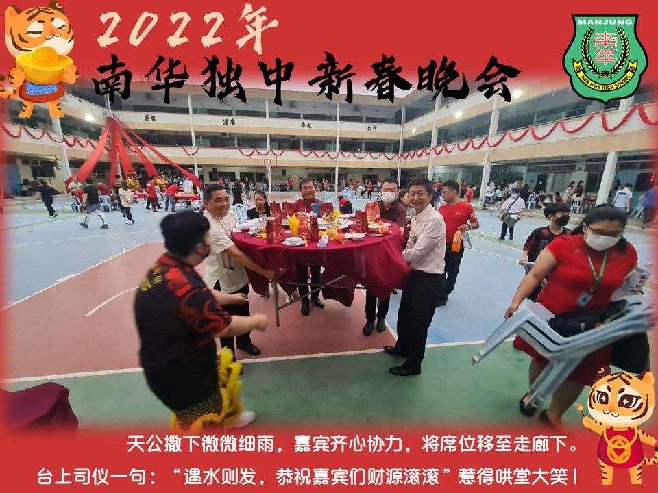
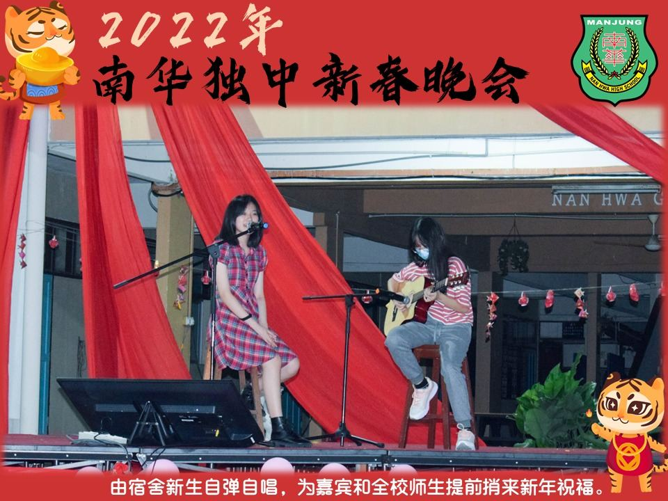

27.01.2022（星期四），由南华宿舍自治会主办“2022年 南华独中新春晚
27.01.2022（星期四），由南华宿舍自治会主办“2022年 南华独中新春晚会” 顺利圆满落幕。
感谢各位出席的嘉宾、家长及学生们，若有招呼不周到之处，敬请谅解。
同时也感谢在短时间内完成策划、筹备及布置现场的宿舍自治会，你们辛苦了！
新的一年，新的开始，就让我们吸收经验，明年办得更出色！更辉煌！
提前恭祝各界：虎年虎虎生威幸福年！
#南华独中 #宿舍自治会 #虎年 #新春 #实兆远曼绒县






